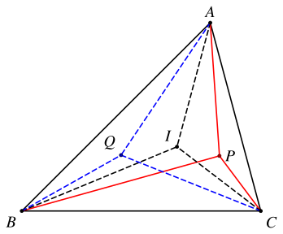
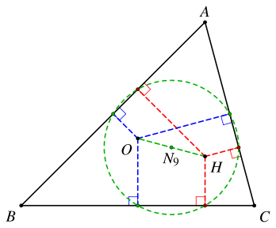
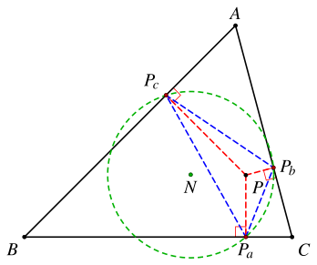
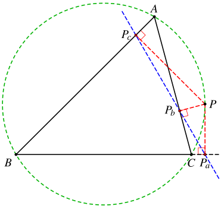
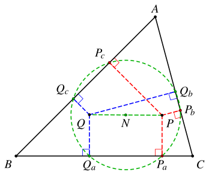
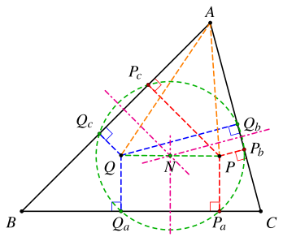
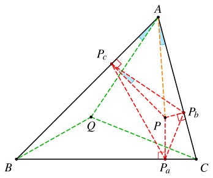
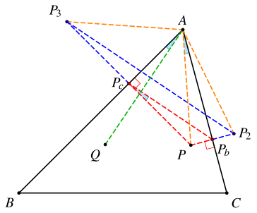
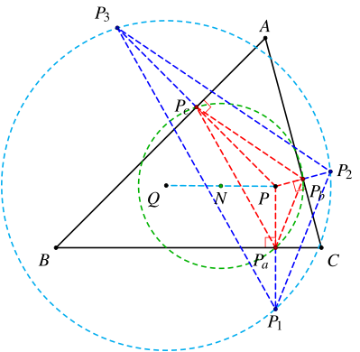
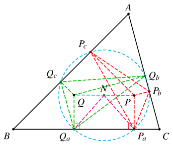

起因
我在使用Qwen3.7-Max重测今年USAMO第5题的时候，发现它找到了一个之前AI都没有发现的结论：点 N 是 K 关于 △OAOBOC 的等角共轭点。
这是一个一般成立的结论：
设点 K 关于 △OAOBOC 三边的对称点为 D、E、F，则 △DEF 的外心 N 是点 K 关于 △OAOBOC 的等角共轭点。
我在看到这个题的时候，由于解得比较快，加之当时主要是想找一个难度合适的新题来测试AI，因此也没有深究，就没有发现这个条件。
实际上，这是一个和等角共轭点相关的经典结论。
1. 等角共轭点
考虑 △ABC 和一点 P。为了简化，我们要求点 P 不在直线 AB、BC、CA 上，且不在 △ABC 的外接圆上。
设 △ABC 的内心为 I，依次作 AP、BP、CP 关于角平分线 AI、BI、CI 的的对称直线，有角元塞瓦定理可知这三条线交于一点，设交点为 Q。我们称点 Q 是点 P 关于 △ABC 的等角共轭点。

最经典的一组等角共轭点就是垂心和外心，与之相关的是一个九点圆的经典结论：九点圆的圆心位于垂心和外心的中点。

2. 垂足三角形
考虑 △ABC 和一点 P。我们要求点 P 不在 △ABC 的顶点上。
我们将点 P 在 △ABC 的三边上的投影 Pa、Pb、Pc 构成的三角形称为点 P 关于 △ABC 的垂足三角形。对应的，△PaPbPc 的外接圆称为垂足圆。

特别地，当点 P 在 △ABC 的外接圆上时，退化为 Pa、Pb、Pc 共线（即西姆松线）。

3. 六点圆
接下来我们要证明的结论是「九点圆」的推广：
考虑一对等角共轭点 P 和 Q，它们对应的垂足三角形 △PaPbPc 和 △QaQbQc 的六个顶点共圆，且圆心是 P、Q 的中点。

即等角共轭点的垂足圆重合。
可以看到，当 P 和 Q 分别是垂心和外心的时候，这个垂足圆就是 △ABC 的九点圆。
证明的思路主要有两个。
一个是先证明两组四点共圆：Pb、Qb、Pc、Qc 共圆，Pc、Qc、Pa、Qa 共圆，然后证明这两个圆重合。
另一个是直接证明 △PaPbPc 和 △QaQbQc 的外接圆重合。
3.1. 证明一
注意到
APcAPb=cos∠PABcos∠PAC=cos∠QACcos∠QAB=AQbAQc
于是有 APb⋅AQb=APc⋅AQc，故 Pb、Pc、Qb、Qc 四点共圆。
圆心为 PbQb 和 PcQc 的垂直平分线的交点，即 P、Q 中点。

同理可证，Pc、Pa、Qc、Qa 四点共圆，圆心为为 PcQc 和 PaQa 的垂直平分线的交点，也是 P、Q 中点。因此两个圆重合。
故 Pa、Pb、Pc、Qa、Qb、Qc 六点共圆。
3.2. 证明二
我们先考虑点 P 的垂足三角形。可以证明一个引理：
点 Q 和 △ABC 三个顶点的连线，分别垂直于点 P 关于 △ABC 的垂足三角形的三条边。
证明
我们只需要证明 QA⊥PbPc 即可。这个比较简单：
∡QAB=∡CAP=∡PbPcPAB⊥PPc}⟹QA⊥PbPc

同理可知另外两组 QB⊥PcPa、QC⊥PaPb 也成立。
实际上，这是得到等角共轭点的第二种方法：
过 △ABC 的三个顶点，分别向点 P 的垂足三角形的三条边作垂线，则这三条垂线交于点 P 的等角共轭点。
接下来，我们设点 P 关于 △ABC 三条边的对称点依次为 P1、P2、P3。我们可以证明：
点 Q 是 △P1P2P3 的外心。
证明
由对称可知，AP2=AP=AP3。有前面的引理可知 QA⊥PbPc，于是有 QA⊥P2P3，因此 QA 是 P2P3 的垂直平分线。

类似的，QB 是 P3P1 的垂直平分线，因此点 Q 是 △P1P2P3 的外心。
设 △PaPbPc 的外心为 N。
我们可以看到，△PaPbPc 和 △P1P2P3 位似，位似中心为 P，位似比为 1:2。
因此它们的外接圆也位似，两个圆心与位似中心共线，且满足 NP:QP=1:2，即点 N 是 P、Q 的中点。

同理，我们考虑点 Q 的垂足三角形 △QaQbQc，则它的外心也是 P、Q 的中点 N。
注意到 N 是直角梯形 PQQaPa 的斜边中点，因此 NPa=NQa，即两个外接圆的半径相等。故 △PaPbPc 和 △QaQbQc 的外接圆重合。

参考资料：
- Advanced Euclidean Geometry, Roger A. Johnson